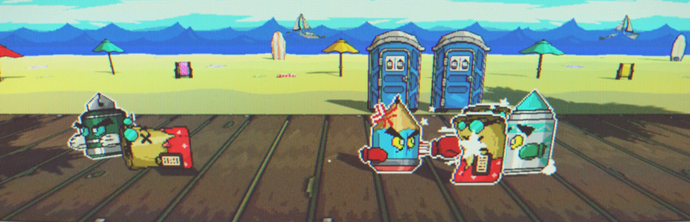

Project: Contract Killer
Inspired by visuals of games like Paper Mario, and Streets of Rage, Contract Killer was first developed for VGDC's Winter Game Jam 2021 with a team of 4 in just 1 week for the theme: "I didn't sign up for this." The game takes inspirations from the visuals of Paper Mario, and gameplay mechanics in the same vein of traditional Beat 'Em Up retro games. We also presented our more developed version of the game to the 2021 SGDA Summit and was awarded a grant for our showcase.
The game was developed in C#, Unity Game Engine, Piskel, and Blender. I worked primarily as one of the programmers on the team, focusing on gameplay mechanics, enemy AI, shaders, core systems, and design within Unity. In 2022, Contract Killer received attention from many publishers, and now received marketing funding by being published by the top publisher in the comic books industry, Behemoth Entertainment.
With the help of a publisher and partnerships with the respective companies, Contract Killer is now being released as a full commercial release on the largest distribution platforms for gaming: Steam, Playstation 5, Xbox Series X, and Nintendo Switch expected in Q1 2022.
Check out the Demo on Steam OR the Game Jam Prototype here!